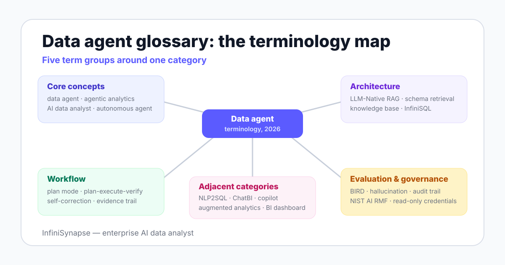

Read the group that matches your current decision, not the whole page. The map below shows how the five groups relate; the table tells you where to start.
This page is the capstone of our data agent category cluster — the deeper treatments live one click away on the Category hub, and each definition links to its long-form guide where one exists.

| Group | Terms | Read first when |
|---|---|---|
| Core concepts | 6 | You are scoping what category of product you are buying at all |
| Architecture | 9 | You are comparing how vendors ground answers in your data |
| Workflow | 6 | You are designing review checkpoints and approval gates |
| Evaluation and governance | 9 | Security or compliance has joined the conversation |
| Adjacent categories | 5 | A vendor demo looks like an agent but might not be one |
Six terms that settle what kind of system you are discussing. If a meeting bogs down, the disagreement is usually hiding in one of these.
An agent is an AI system in which a large language model dynamically directs its own processes and tool usage, rather than following a fixed script. Anthropic's Building Effective Agents draws the category line at exactly this autonomy.
A data agent is an AI system that plans, executes, checks, and explains data analysis tasks using connected sources, business context, and governed execution tools. It owns the analysis workflow from question to verified result.
The full treatment, including a five-stage loop and an evaluation checklist, is in what is a data agent.
Agentic analytics is an analytics workflow in which an AI agent owns execution — planning, querying, verifying, and explaining — while humans review plans and evidence. It inverts the classic BI model, where humans execute and software assists.
See agentic analytics explained for the workflow-by-workflow comparison.
An AI data analyst is a software system that performs the workflows of a human data analyst under human review. The same phrase also names the human role that supervises such systems day to day.
The software sense is covered in AI data analyst explained; the hiring sense, with a copyable JD, in the AI data analyst job description guide.
An autonomous data agent completes multi-step analysis with minimal human intervention, deciding when to re-plan and when to escalate. Autonomy is a spectrum: production deployments keep human checkpoints at plan approval and result sign-off, as covered in autonomous data agent.
An AI-native data platform is a data stack designed around agent execution from the start — context retrieval, planning, multi-source execution, evidence trails — rather than a chat layer added onto an existing BI tool. Architecture details: AI-native data platform.
Nine terms describing how an agent knows things about your business and your schemas. Most accuracy differences between vendors live in this layer.
Retrieval-augmented generation is a technique in which a language model retrieves relevant documents at query time and grounds its output in them, reducing fabricated answers. It is the standard way agents access knowledge they were not trained on. Background: Wikipedia, Retrieval-augmented generation.
LLM-Native RAG is InfiniSynapse's self-developed retrieval layer that combines business knowledge recall with schema recall. Its knowledge base holds data dictionaries, metric definitions, analysis playbooks, and past cases, so the agent reads company-specific context before it plans.
Schema retrieval is the step in which an agent searches connected databases for the tables, columns, and join keys relevant to a question. Weak schema retrieval is a leading cause of plausible but wrong generated queries.
A knowledge base, in agentic analytics, is the curated store of business context an agent reads: data dictionaries, metric definitions, analysis playbooks, and documented past cases. Its quality usually constrains agent accuracy more than model choice does.
A semantic layer is a governed mapping between business terms and physical data — metrics, dimensions, and joins defined once and reused. ChatBI tools depend on one; data agents can use one but can also work beyond it.
An intermediate representation is a structured query form an agent generates instead of raw SQL, designed for machine planning and validation. InfiniSynapse's InfiniSQL is an LLM-optimized IR that connects to a multi-source execution layer.
The context window is the maximum text a language model can consider in one pass: instructions, retrieved context, schemas, and conversation history. Retrieval architectures exist because enterprise context always exceeds any context window.
Agent memory is the mechanism by which a data agent persists knowledge across sessions — corrected definitions, schema mappings, analysis preferences — so the same mistake is not repeated next quarter. The full guide: data agent memory explained.
Tool use, or function calling, is a model's ability to invoke external tools — query execution, file editing, browser operations — and incorporate their results. It is what turns a text generator into a system that acts.
Six terms describing how an agent moves from question to verified answer. These are the words to use when you design review checkpoints.
Plan mode is a workflow control in which the agent drafts a full analysis plan — sources, joins, time windows, output format — and a human reviews and adjusts it before anything executes. InfiniSynapse ships this as an explicit product mode.
The plan-execute-verify loop is the core agent control structure: draft a plan, run it, check the result, and re-plan when a check fails. It descends from the ReAct pattern (2022), which showed that interleaving reasoning and acting reduces error.
Self-correction is an agent's ability to detect its own failed or implausible step — an empty result set, an impossible total — and revise the plan without a human prompting it. It separates agents from one-shot query generators.
An evidence trail is the record an agent attaches to a single result: the plan, the queries executed, the sources touched, and the checks passed. It is what makes an AI-produced number reviewable instead of take-it-or-leave-it.
Human-in-the-loop is a design pattern that places mandatory human checkpoints inside an automated workflow — typically plan approval before execution and sign-off before distribution. It is the practical middle ground between manual analysis and full autonomy.
Cross-source analysis is the joining of data across systems — warehouses, databases, files — within one analysis, without a prior ETL migration. A documented InfiniSynapse demonstration joins JD and Tmall platform data with a CSV file by phone number.
When a vendor says "agent," ask which of these six workflow terms their product actually implements — the answer sorts the category fast.
Nine terms for measuring agents and keeping them inside guardrails. Security reviews go faster when both sides use these words the same way; the longer argument for evidence-first analytics is in explainable AI data analysis.
A text-to-SQL benchmark measures how accurately a system translates natural-language questions into executable SQL over reference databases. Benchmarks score query generation only; they do not measure planning, verification, or explanation quality.
BIRD is a large-scale text-to-SQL benchmark built on messy, realistic databases. Human engineers reach 92.96% execution accuracy on it while models trail — the gap that context retrieval and verification loops exist to close. Leaderboard: bird-bench.github.io.
Spider is a Yale-built text-to-SQL benchmark spanning many databases and schemas, designed to test generalization to unseen structures. It preceded BIRD and remains a standard reference for cross-domain query generation. Project page: yale-lily.github.io/spider.
A hallucination is a model output that is fluent but unsupported by the underlying data — an invented number, table, or trend. In analytics it is the failure mode that grounding, verification, and evidence trails exist to catch.
Explainability is the degree to which a human can understand and reconstruct how an AI system reached its result. For data agents, that means plans, queries, and sources attached to every number. Background: Wikipedia, Explainable artificial intelligence.
An audit trail is the durable, timestamped log of everything an agent did — queries run, credentials used, outputs delivered — kept for compliance review. It differs from an evidence trail, which explains one result to its reader.
Read-only credentials are database permissions that let an agent query data but never modify it. They are the default safe scope for agent deployments and the first control a security reviewer should check.
The NIST AI Risk Management Framework (1.0, 2023) is a voluntary US framework for managing AI risk through four functions: govern, map, measure, and manage. Teams use it as shared vocabulary when security reviews an agent deployment. Source: nist.gov.
The EU AI Act is the European Union's AI regulation, in force since 2024-08-01 with obligations phasing in through 2026-2027. Teams deploying agents on EU-relevant data should map their use cases to its risk tiers. Overview: European Commission.
Five terms for things that are not data agents but get sold next to them. Knowing these prevents the most expensive kind of mislabeled purchase.
NLP2SQL is the narrow capability of translating one natural-language question into one SQL query. It is a component, not a category: it plans nothing, verifies nothing, and explains nothing beyond the query text itself.
ChatBI is a conversational interface over a BI semantic layer: it answers questions about metrics that were already modeled. It fails on open-ended or cross-source questions, which is exactly where data agents begin.
Augmented analytics is Gartner's 2017 category for AI assistance inside human-driven BI workflows: automated insights, natural-language queries, smart chart suggestions. The human still owns execution — the dividing line we examine in AI-native vs augmented analytics.
An analytics copilot is an AI assistant embedded in a tool you drive: it suggests queries, formulas, or summaries while you keep every execution step. Microsoft 365 Copilot is the canonical example; the full comparison is in data agent vs AI copilot.
A BI dashboard is a pre-built, continuously refreshed display of modeled metrics. It remains the cheapest answer for fixed, recurring questions — and the wrong tool for open-ended investigation, which is agent territory.
When an evaluation meeting goes in circles, one of these five pairs is usually being used interchangeably. Settle the pair, and the meeting restarts.
| Commonly confused pair | One-line disambiguation |
|---|---|
| Data agent vs copilot | An agent owns execution and shows evidence; a copilot suggests while you execute every step yourself. |
| Agentic analytics vs augmented analytics | Agentic means the agent runs the workflow under human review; augmented means AI assists a workflow humans still run. |
| RAG vs fine-tuning | RAG retrieves knowledge at query time and can cite it; fine-tuning bakes knowledge into model weights ahead of time, invisibly. |
| NLP2SQL vs ChatBI | NLP2SQL is a query-translation capability; ChatBI is a packaged product pattern built on a pre-modeled semantic layer. |
| Autonomy vs automation | Automation repeats a fixed script; autonomy lets the system choose its own steps within governed limits. |
Definitions settle vocabulary, not architecture. If you are past terminology and into evaluation, the eight-dimension checklist in what is a data agent is the next read; this page deliberately stays at the definition layer.
Plan mode, schema retrieval, evidence trails, and cross-source analysis are all visible in a single InfiniSynapse run. Connect a database read-only, ask one question, and match what you see against the definitions above.
Try InfiniSynapse onlineLast updated: 2026-06-12 · Next scheduled review: 2026-09-12
The 35 definitions were written against published agent research (ReAct, the 2025 data agent surveys), public benchmarks (BIRD, Spider), governance sources (NIST AI RMF, the EU AI Act), reference encyclopedia entries, and vendor documentation. Every definition is 25-50 words and written to stand alone when quoted.
Product terms: LLM-Native RAG and InfiniSQL are InfiniSynapse product terms, defined here because readers encounter them in our documentation; they are labeled as ours rather than presented as industry standards.
Conflict of interest: InfiniSynapse publishes this glossary and sells in the data agent category. To reduce bias, adjacent-category definitions state plainly what those tools do well, and the page links external sources for every benchmark, framework, and regulation named.
Update cadence: Reviewed every 90 days for terminology drift, source links, and schema consistency.